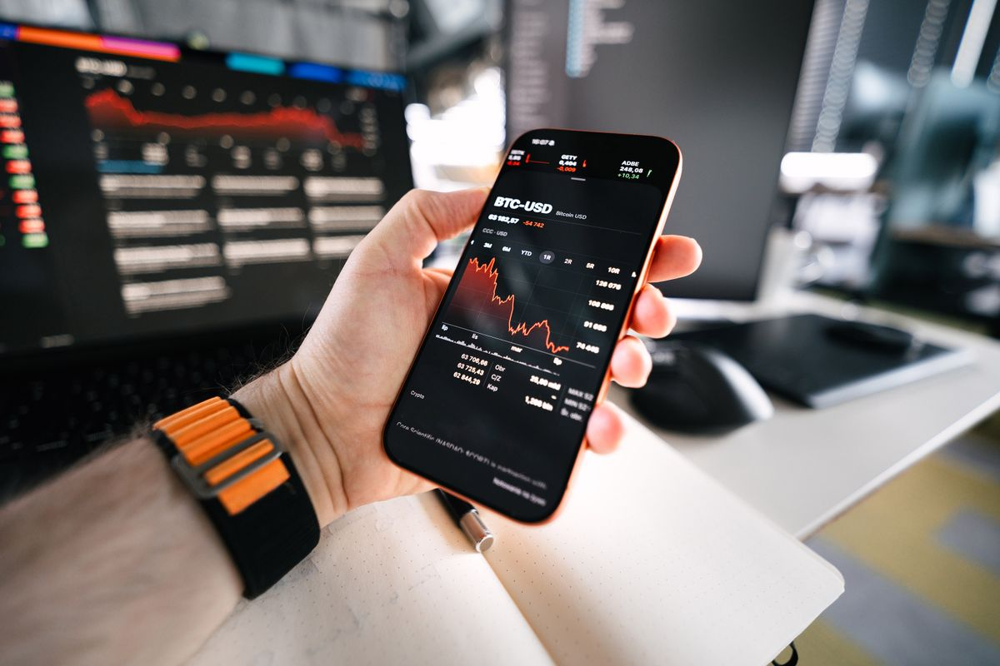

“Uso l'area più che altro per le note: ritrovo tutto nella scheda dello strumento.”
Alessia D. · Roma · GraficoPreview One Il mercato, senza rumore
in pochi passaggi
Pensato per chi vuole capire cosa sta guardando prima di premere un tasto.
Prelievi entro 24 ore
REGISTRAZIONE
Registrazione guidata, senza moduli inutili
Lascia i contatti: richiamiamo in orario di ufficio e completiamo la verifica insieme.
Richiamo entro 30 minuti lavorativi✓
Percorso di accesso in tre passaggi✓
Documenti caricati dall'area personale✓
Assistenza in italiano, anche dopo l'apertura✓
3 passidurata della registrazione
≤ 1 oraverifica dell’identità tipica
24/5assistenza nei giorni lavorativi
L’account viene attivato solo dopo la verifica dei dati: nessun abbonamento né rinnovo automatico.
BTC/EUR87.450+2,4%
ETH/EUR3.120-0,8%
PRIMA DI INIZIARE
Una guida breve, senza sorprese
Le informazioni che contano prima di aprire l'area, spiegate in modo semplice e verificabile.
- Un'unica area, tre livelli
- La schermata iniziale raccoglie la panoramica dei mercati, la lista degli strumenti seguiti e lo storico delle operazioni. Ogni modulo si apre con una spiegazione breve e resta collegato agli altri, così non serve cambiare pagina per controllare una posizione.
- La demo prima del denaro
- La modalità dimostrativa usa lo stesso pannello dell'area reale, ma con importi simulati. Serve a capire come si impostano gli avvisi, come si legge un grafico e quanto tempo richiede il controllo delle posizioni. Provarla non attiva alcun addebito.
- Verifica dell'identità
- Dopo la richiesta viene chiesto un documento e un recapito verificabile. I controlli servono a rispettare gli obblighi antiriciclaggio e a proteggere l'accesso. Se un documento non è leggibile, il sistema lo segnala e si può ricaricare senza ricominciare.
- Come leggere i listini
- Accanto a ogni prezzo compare la variazione della giornata e, se presente, il ritardo del dato. Gli importi mostrati nell'anteprima sono illustrativi finché l'area non è attiva. Per un confronto corretto usate lo stesso orario e lo stesso intervallo.
- Rischio e limiti
- Nessuno strumento elimina le perdite: si possono impostare avvisi e limiti, ma il mercato resta imprevedibile. Prima di operare conviene definire una cifra massima e un orario fisso per rivedere le posizioni. Se il risultato non è chiaro, meglio fermarsi.
- Assistenza e documenti
- Il supporto risponde in italiano nei giorni lavorativi e raccoglie le richieste dal modulo o dall'area personale. Condizioni, privacy e contatti sono nelle pagine dedicate del sito. Conservate i riferimenti delle richieste per ritrovarle in seguito.

AREA DI LAVORO
L'area di lavoro, dove serve
L'anteprima mostra come si leggono grafici, watchlist e cronologia da mobile, senza cambiare interfaccia rispetto al desktop.
- Grafici e watchlist nella stessa vista
- Avvisi di prezzo senza aprire il desktop
- Cronologia ordini sempre a portata
IL PUNTO
Un'interfaccia sola, compiti chiari
Listini, strumenti di analisi e area personale convivono in una sola schermata. Ogni sezione ha un compito preciso, senza riquadri decorativi.
PERSONE
Chi usa Preview One
“Il richiamo è arrivato in mattinata, la verifica è stata rapida e senza domande ripetute.”
Beatrice C. · Roma · Tecnico“Non ci sono finestre che coprono i dati: cosa rara in questo tipo di interfaccia.”
Stefano Z. · Roma · CommerciantePROSSIMO PASSO
Apri l'accesso a Preview One
Modulo breve, richiamo in orario di ufficio.
DOMANDE
Domande frequenti, risposte complete
Serve un versamento per registrarsi?
No, la richiesta è gratuita e non vincola a nulla. Il versamento serve solo in un secondo momento, per attivare l'area operativa. Fino ad allora potete esplorare la panoramica e decidere con calma.
Quanto dura la verifica?
In genere lo stesso giorno lavorativo, se i dati inviati sono completi e leggibili. Se servono documenti aggiuntivi, il team lo segnala subito nell'area personale. Ricevete una email a ogni cambio di stato.
L'assistenza è in italiano?
Sì, il supporto risponde in italiano in orario di ufficio, dal lunedì al venerdì. Le risposte arrivano per email o tramite il modulo di contatto, di solito entro un giorno lavorativo. Per le domande ricorrenti esiste anche la sezione guide.
Posso cambiare i dati dopo l'apertura?
Sì, dall'area personale: nome, contatti e preferenze si aggiornano in pochi clic. Ogni modifica chiede una conferma via email per sicurezza. Se qualcosa non va a buon fine, l'assistenza vi segue passo per passo.
I dati dei listini sono in tempo reale?
Dipende dal livello dell'account: il ritardo eventuale è indicato accanto al prezzo, così sapete sempre cosa state vedendo. I grafici restano sincronizzati tra desktop e mobile. I valori mostrati restano dimostrativi finché l'area non è attiva.
Devo avere esperienza per iniziare?
No, il percorso parte dalle basi: la panoramica, i listini e la modalità dimostrativa si esplorano senza operare. Chi ha già pratica può regolare watchlist, avvisi e criteri di rischio fin dal primo accesso. In ogni caso conviene provare la demo prima di qualsiasi versamento.
Quali mercati posso seguire?
L'area raccoglie criptovalute, coppie valutarie, indici e materie prime in un'unica vista. Ogni strumento mostra prezzo, variazione della giornata e un breve contesto, così il confronto resta immediato. L'elenco disponibile dipende dal profilo e viene indicato prima dell'attivazione.
Come vengono gestiti i miei dati e i fondi?
I dati personali sono trattati secondo il GDPR e le regole locali; le credenziali viaggiano su connessioni cifrate. I fondi restano separati dalla gestione ordinaria e ogni movimento è registrato nell'area personale. Nessun sistema elimina il rischio di mercato: le decisioni restano sempre vostre.
Posso perdere il capitale?
Sì, ogni strumento finanziario può perdere valore e i risultati passati non anticipano quelli futuri. La piattaforma offre strumenti di analisi e limiti impostabili, non garanzie di rendimento. Prima di operare conviene definire quanto siete disposti a mettere a rischio.
Come funziona il prelievo?
La richiesta si invia dall'area personale e viene registrata con data e importo. I tempi dipendono dal metodo scelto e dalla banca, in genere entro pochi giorni lavorativi. Lo stato resta visibile nella cronologia, con una email a ogni passaggio.
Cosa succede dopo l'invio del modulo?
Un consulente ricontatta il numero indicato per confermare i dati e rispondere alle domande. Segue la verifica dell'identità e, solo se decidete di proseguire, l'attivazione dell'area operativa. Non c'è obbligo di versare nulla durante il colloquio.
Ci sono costi nascosti o commissioni?
Le condizioni applicabili sono indicate prima della conferma, senza addebiti sorpresa per la registrazione o l'assistenza. Eventuali spread, commissioni di terzi e costi di rete restano separati e vanno letti nel dettaglio. In caso di dubbio, chiedete un riepilogo scritto al supporto.
4,5/5Valutazione media
525Recensioni verificate
1.656Ordini al secondo
99,9%Uptime API
Preview One — cosa indica il nome
Si cerca preview one login, preview one registrazione e Preview One Roma per arrivare all'area personale. Il dominio ufficiale resta preview-one.site.
Nelle pagine interne trovi il metodo di lavoro, la struttura degli strumenti e i recapiti diretti; le condizioni sono nella pagina termini.